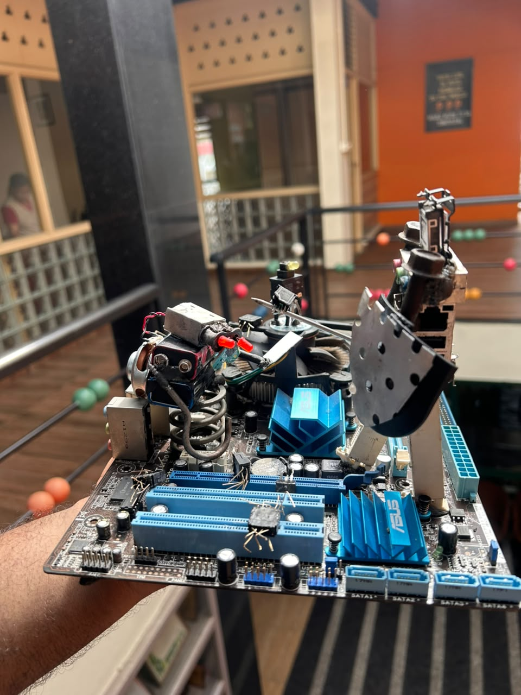

Repair & reuse
Consider a second life before recycling.
OUR LEARNING
Practical knowledge for longer-lasting devices and better e-waste choices.
Understand the basics.
Consider a second life before recycling.
Reset devices before handover.

